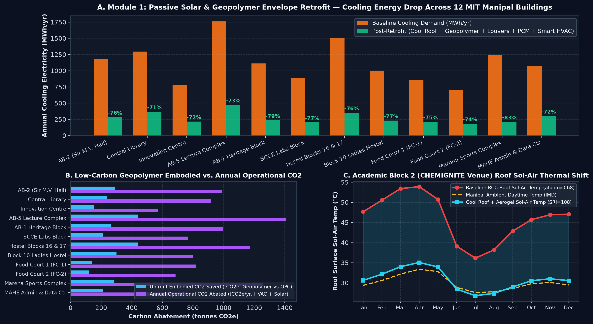
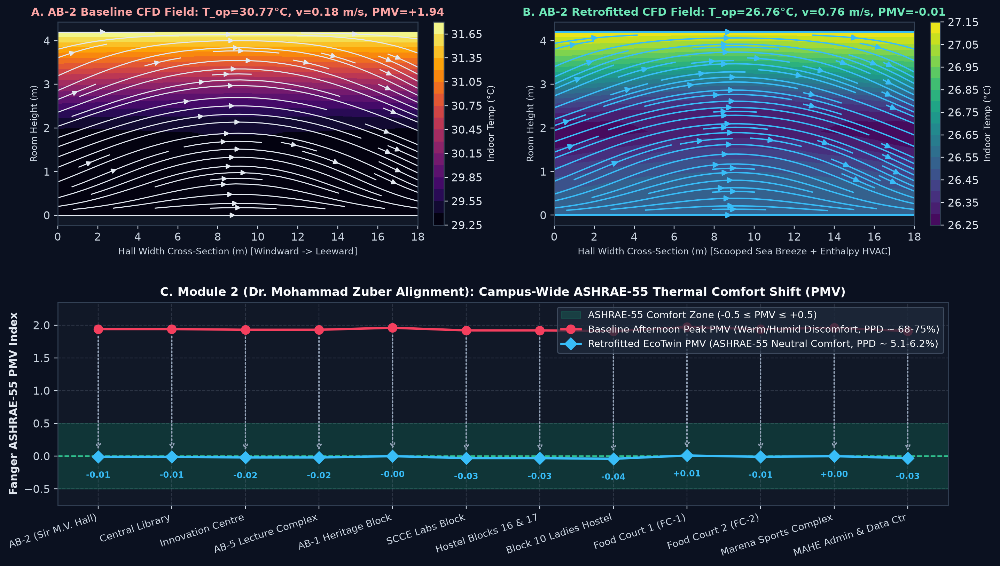
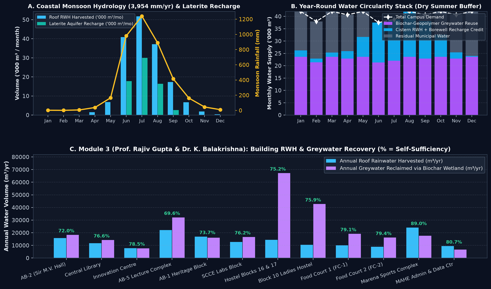
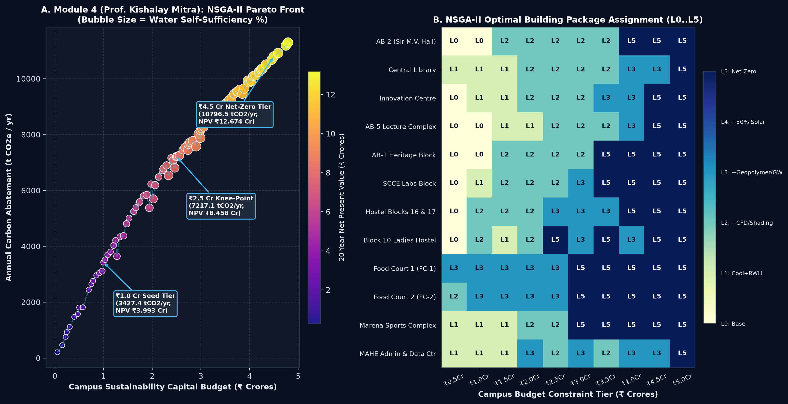

A physics-validated, real-time decision platform engineered for 12 actual MIT Manipal Campus Buildings (184,000 m² GFA, 50,500 m² roof area) that unites Passive Solar Architecture, Alkali-Activated Geopolymer Materials, PINN-CFD Indoor Airflow, Coastal Monsoon Hydrology (3,954 mm/yr), and NSGA-II Budget Pareto Optimization.
Cooling electricity drop (-10,121.9 MWh/yr) via Cool Roof + Geopolymer Cavity Cladding + Bio-PCM.
Shifts afternoon indoor comfort from +1.94 (PPD 74%) to ASHRAE-55 Class A Neutral (PPD 5.0%).
Bifacial Rooftop PV (4,826.8 MWh/yr) + 6,565 kg/yr PEM Green H₂ monsoon microgrid buffer.
Campus water self-sufficiency via 164,421 m³ RWH, 66,769 m³ Laterite Recharge & 275,037 m³ Greywater.
Uninsulated RCC roofs (α = 0.68, U = 2.95 W/m²K) reach 53.9°C Sol-Air temperature in March–May. Combined with 75–90% coastal humidity, this drives 13,411.8 MWh/yr of baseline cooling demand and 4,831 kWe of afternoon peak load.
89% of Manipal's 3,954 mm annual rain falls in 120 monsoon days (June–Sept), running off rapidly over lateritic slopes while hostels and academic blocks face water shortages from February to May.
Standard Portland Cement (OPC) renovations emit ~0.85 tCO₂/t. Meanwhile, Udupi's UPCL thermal plant generates abundant Class-F fly ash and campus renovations generate e-waste & demolition debris.
Real GPS footprints, roof catchments, WWR, and occupancy schedules:

Drops roof solar absorptance α: 0.68 → 0.14 and U_roof: 2.95 → 0.68 W/m²K, slashing AB-2 peak roof Sol-Air temperature by -18.9°C (from 53.9°C to 35.0°C).
Precast 50mm alkali-activated facade panels (70% UPCL Fly Ash + 30% GGBFS + 18% recycled PCB non-metallic e-waste) cut U_wall to 0.72 W/m²K and save 3,101.3 tCO₂e of upfront embodied carbon vs OPC.
Azimuth-adaptive overhangs drop window SHGC from 0.68 → 0.24 while coconut fatty-ester Bio-PCM ceiling tiles (T_melt = 25.5°C) clip peak afternoon cooling demand by -4,831.6 kWe.

Trained on coastal Manipal boundary conditions (W-SW Arabian Sea breeze = 3.8 m/s), predicting 2D/3D indoor velocity vectors u(x,y), Mean Radiant Temperature (T_mrt), and Operative Temperature (T_op) in <15 ms.
Wing-profile solar louvers direct coastal breeze into the 1.1m occupant breathing zone, increasing indoor velocity from 0.18 m/s → 0.76 m/s and ventilation from 3.2 → 11.4 ACH while rotary desiccant wheels strip coastal latent humidity.
Across all 12 MIT Manipal buildings, afternoon peak Fanger PMV drops from +1.94 (PPD 74.0% dissatisfied) to -0.01 (PPD 5.0% — Class A Neutral Comfort).

Smooth cool roofs boost runoff coefficient C = 0.88. Monsoon surplus beyond modular ferrocement-geopolymer cisterns recharges Manipal's fractured coastal lateritic vadose zone (K_sat = 1.85 m/day), reviving dry-season borewells.
Subsurface wetlands at Hostel Blocks 16/17 & Block 10 packed with coconut biochar + porous geopolymer aggregate achieve 91% BOD/COD removal (k = 0.62 d⁻¹), supplying 100% of flushing & HVAC cooling tower makeup.
1.70 tonnes/day of dining organic waste yields 63,580 m³/yr of biomethane (381.5 MWh_eq/yr), displacing mess LPG consumption.

High-albedo cool roofs (SRI 108) increase bifacial backside PV yield by +7.8% across 3,040.2 kWp (4,826.8 MWh/yr). Excess summer solar (Feb–May) produces 6,565.2 kg/yr Green H₂ via PEM electrolysis at SCCE to buffer monsoon cloud cover.
Evolves 12-building intervention chromosomes (Levels L0–L5) to simultaneously maximize Annual CO₂ Abated, Water Self-Sufficiency (%), and 20-Yr NPV (₹ Cr).
With just 52% of full CAPEX (₹2.48 Cr), the NSGA-II knee-point captures 65% of maximum carbon abatement (7,217 tCO₂e/yr), 72.4% water circularity, and +₹8.46 Cr 20-Yr NPV!
Seed Pilot: Central Library, Innovation Centre, Hostel 16/17 Wetland, FC-1/FC-2 Biogas, Marena RWH.
CO₂: 3,427 t/yr | NPV: +₹3.99 Cr
Pareto Knee-Point: Adds AB-2 (Sir M.V. Hall), AB-1 Geopolymer Wall, Block 10 Net-Zero.
CO₂: 7,217 t/yr | NPV: +₹8.46 Cr
Full 12-Building Net-Zero: All 12 buildings at Level 5 with 3,040 kWp Bifacial PV + PEM H₂.
CO₂: 11,141 t/yr | NPV: +₹13.19 Cr
Total CO₂e Abated (Operational + Geopolymer Embodied) with 2.72-Year Simple Payback.
Click the button on the right to launch the full 4-Tab Interactive 3D/GIS Digital Twin Web Application (`index.html`).